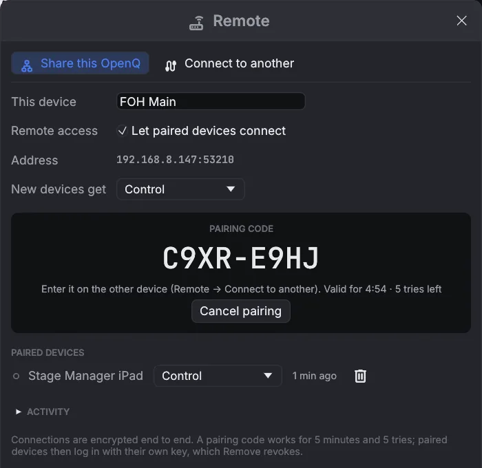

Remote control and network
6.1Remote devices
A second computer running OpnQ on the same network can follow the show and run it. This could be the stage manager's laptop or a tablet at the tech table. The computer running the show is the main device, and it does all the playback. The other device shows its cue list, playhead, running cues and meters, and sends GO and other commands to it.
Pairing a device
- On the main device, open , tick
Let paired devices connect, and click Pair a new device…. A code such as
C9XR-E9HJappears. - On the other device, open , click Search and choose the main device. If the search finds nothing, type its address, which is shown in the main device's Remote window.
- Enter the code and click Connect. After the first time, connecting needs no code.

Roles
| Role | The device can |
|---|---|
| View only | Follow the show: cue list, playhead, running cues and meters. |
| Control | Also press GO, stop, pause and resume, move the playhead, and start or stop single cues. |
| Control & edit | Also edit the show. Changes are saved on the main device. |
Set the role new devices get, and change any device's role, in the main device's Remote window. Changes take effect at once. Remove disconnects a device straight away, and it has to pair again to reconnect. When a device disconnects, it gets its own show back. Media files stay on the main device, so add them there. Several devices can edit at once: cues one adds, moves or deletes are merged into the show as it is on the main device, so they don't undo what the others did meanwhile.
Connections are encrypted and authenticated. A pairing code works for 5 minutes and 5 tries, and someone who records the network traffic still can't work it out from the recording. After pairing, each device logs in with its own secret key. An address that keeps failing is blocked for 5 minutes. The Activity list shows connections and rejected attempts.
Remote access uses TCP port 53200, and
the search uses UDP port 53201 and mDNS (UDP 5353). A firewall on the main device has to allow
them. The search also finds a main device on another subnet or VLAN when the network passes mDNS between them (an
"mDNS gateway" or reflector in the switches or router). On guest Wi-Fi the search may find nothing; typing the address
still works.
6.2OSC and network cues
Turn on OSC remote control in . It listens on UDP port 53000 by default. Cues are addressed by their number.
| Address | Action |
|---|---|
/go | GO |
/stop · /panic | Stop all with the fade · stop all instantly |
/pause · /resume | Pause all · resume all |
/playhead/next · /playhead/previous | Move the playhead |
/playhead/4.2 | Put the playhead on cue 4.2 |
/cue/4.2/start | Also stop, pause, resume, devamp |
/light/executor/2/level 0.5 | Executor 2's level; also go, release, flash (1 = press, 0 = let go). /light/grandmaster 0.8, /light/blackout, /light/release, /light/tap |
A Network cue sends one OSC message to other gear. Set the host, port, address
(for example /eos/cue/12/fire) and arguments. Arguments are separated by spaces: numbers are sent as
numbers, and text in quotes is sent as text.
Set Send to Text for gear that takes plain commands (projectors, video switchers, media
servers): type the text with escapes for control characters (\r return, \n new line,
\t, \0, \xHH any byte, \\ a backslash). UDP sends one
datagram; TCP keeps a connection open to the destination and opens it again if the other end closes it.
OSC can go over TCP too (framed as OSC 1.1 says). A message that can't be sent is shown in red on the cue and in
Show → Warnings.